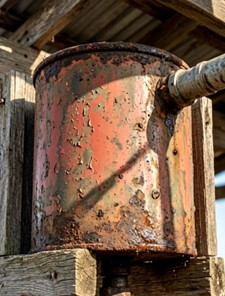

Envelhecimento de peças metálicas
O envelhecimento de peças metálicas pode produzir um efeito bastante realista, reproduzindo tinta descascada, áreas oxidadas e ferrugem acumulada pelo tempo.

1. Para enrugar e descascar a tinta
Use um removedor de tinta, como Pintoff, Maxi Rubber, Stripe ou produto semelhante.
Em vez de aplicar o removedor e raspar toda a tinta imediatamente, como seria feito em uma restauração convencional, aplique o produto com um pincel apenas em algumas áreas da peça.
Deixe o produto agir por alguns minutos, até a tinta começar a formar bolhas e enrugar. Quando atingir o efeito visual desejado, interrompa a ação do produto conforme as instruções do fabricante.
O objetivo é conservar algumas áreas com a tinta aderida e outras parcialmente soltas e enrugadas, criando a aparência de uma peça envelhecida.
2. Para criar a textura de ferrugem
A peça da foto apresenta bastante oxidação, com áreas de ferrugem aparecendo por baixo e por cima da tinta vermelha/alaranjada.
Se estiver trabalhando com uma peça de metal ferroso limpa, é possível acelerar a formação da ferrugem utilizando água oxigenada 10 volumes, vinagre branco e sal.
Aplique a solução sobre as áreas de metal exposto. Após algum tempo, começará a se formar uma camada de ferrugem real, porosa e escura.
3. Finalização com verniz fosco
Depois de obter o efeito desejado, aplique verniz fosco para proteger e conservar o acabamento.
O verniz ajudará a fixar as partes de tinta envelhecida e a preservar o aspecto da oxidação. Prefira o acabamento fosco, pois o brilho prejudicaria o efeito realista de uma peça antiga e exposta ao tempo.